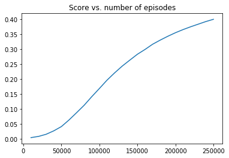
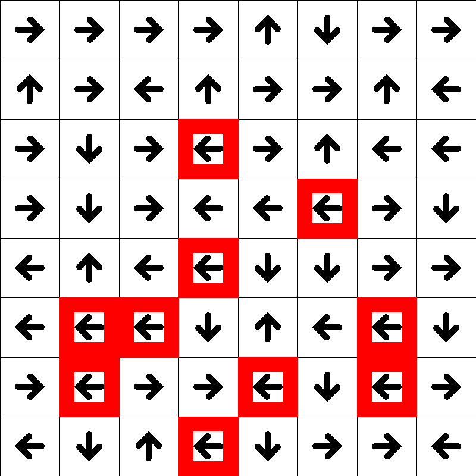

Table of contents
Introduction
Basic Q-learning trained on the FrozenLake8x8 environment provided by OpenAI’s gym toolkit. Includes visualization of our agent training throughout episodes and hyperparameter choices.
Q-learning and training
Code from https://simoninithomas.github.io/Deep_reinforcement_learning_Course/
# Import packages
import numpy as np
import gym
import random
import matplotlib.pyplot as plt
%matplotlib inline
# Visualization function
%run Draw_FrozenLake.ipynb
# Create environment
env = gym.make("FrozenLake8x8-v0")
env.render()
[41mS[0mFFFFFFF
FFFFFFFF
FFFHFFFF
FFFFFHFF
FFFHFFFF
FHHFFFHF
FHFFHFHF
FFFHFFFG
Q-table
action_size = env.action_space.n
print("Action size: ", action_size)
state_size = env.observation_space.n
print("State size: ", state_size)
Action size: 4
State size: 64
Hyperparameters
- Differences from FrozenLake-v0 which is 4x4:
- Changes in minimum $\epsilon$ and its decay rate because we have a larger environment to explore (8x8) which is 4 times larger
- More episodes to train our Q-table on (and as a result we need less decay on $\epsilon$ mentioned above)
- Higher max_steps because our state_size is 4 times larger
- The chance for a random action sequence to reach the end of the frozen lake in a 4x4 grid in 99 steps is much higher than the chance for an 8x8 grid. To compensate, we give each episode more steps.
The probability that a random action sequence reaches the end is at WORST 1/(4^6) or 1/4096 for a 4x4 grid because it needs to take 3 steps right and 3 steps down. I say at worst because there are combinations of 3 right, 3 down steps that also reach the end, but in a randomly generated frozen lake, we cannot be certain of the exact probability.
Compare this to an 8x8 frozen lake. We would need to take 7 steps right and 7 steps down at worst, which comes out to 1/(4^14) or 1/268435456. This is 4^8 times or 65,536 times more unlikely.
We keep the number of max_steps close to (action_size * state_size * 2) approximately, and crank the number of episodes up. Of course, if we take a look at our epsilon decay function, we see that it reaches min_epsilon rather quickly, so we decrease epsilon decay_rate and min_epsilon.
qtable_history = []
score_history = []
qtable = np.zeros((state_size, action_size))
total_episodes = 250000 # Total episodes
learning_rate = 0.8 # Learning rate
max_steps = 400 # Max steps per episode
gamma = 0.9 # Discounting rate
# Exploration parameters
epsilon = 1.0 # Exploration rate
max_epsilon = 1.0 # Exploration probability at start
min_epsilon = 0.001 # Minimum exploration probability
decay_rate = 0.00005 # Exponential decay rate for exploration prob
# List of rewards
rewards = []
# 2 For life or until learning is stopped
for episode in range(total_episodes):
# Reset the environment
state = env.reset()
step = 0
done = False
total_rewards = 0
for step in range(max_steps):
# 3. Choose an action a in the current world state (s)
## First we randomize a number
exp_exp_tradeoff = random.uniform(0, 1)
## If this number > greater than epsilon --> exploitation (taking the biggest Q value for this state)
if exp_exp_tradeoff > epsilon:
action = np.argmax(qtable[state,:])
# Else doing a random choice --> exploration
else:
action = env.action_space.sample()
# Take the action (a) and observe the outcome state(s') and reward (r)
new_state, reward, done, info = env.step(action)
# Update Q(s,a):= Q(s,a) + lr [R(s,a) + gamma * max Q(s',a') - Q(s,a)]
# qtable[new_state,:] : all the actions we can take from new state
qtable[state, action] = qtable[state, action] + learning_rate * (reward + gamma * np.max(qtable[new_state, :]) - qtable[state, action])
total_rewards += reward
# Our new state is state
state = new_state
# If done (if we're dead) : finish episode
if done == True:
break
# Reduce epsilon (because we need less and less exploration)
epsilon = min_epsilon + (max_epsilon - min_epsilon)*np.exp(-decay_rate*episode)
rewards.append(total_rewards)
episode_count = episode + 1
if episode_count % 10000 == 0:
qtable_history.append(qtable)
score_history.append(sum(rewards)/episode_count)
save_canvas(qtable, 800, 800, filename = "./output/FrozenLake_ep" + str(episode_count) + ".png")
print ("Score over time: " + str(sum(rewards)/total_episodes))
print(qtable)
Score over time: 0.399036
[[3.04990173e-04 3.66468917e-03 2.91640625e-04 3.06738972e-04]
[8.12944415e-04 1.28704482e-02 3.62970233e-04 3.43069361e-04]
[6.63808684e-04 5.66621774e-04 2.12327589e-02 5.93510983e-04]
[3.41741910e-04 2.96820542e-04 3.27044472e-04 3.04134538e-02]
[5.71102462e-04 5.65012072e-04 5.88121886e-02 5.75779952e-04]
[2.10435793e-03 1.29556209e-03 4.28251102e-02 1.15263826e-03]
[1.42663804e-03 2.87830739e-02 1.49533784e-03 1.45791054e-03]
[1.13426435e-03 1.93791629e-02 1.78604589e-03 1.84206129e-03]
[1.08502846e-04 2.76724565e-04 3.28626958e-04 7.33557266e-03]
[3.31607590e-04 1.23364142e-04 7.41970238e-04 9.19624400e-03]
[1.66004811e-04 1.83406936e-04 1.60421224e-04 2.31862445e-02]
[2.25370034e-07 1.46208101e-04 2.87809984e-04 2.25049867e-02]
[9.03344061e-04 4.96618281e-04 1.13750772e-03 2.28387181e-02]
[1.08485965e-03 1.22650118e-03 3.29456479e-02 1.09807063e-03]
[1.50844136e-03 1.20588961e-03 7.81990546e-02 1.84629870e-03]
[2.10435606e-03 2.39722654e-02 2.19260780e-03 2.04546034e-03]
[7.82499003e-05 7.74938189e-05 1.41941083e-03 6.84656139e-05]
[9.34607223e-04 6.97681216e-05 1.01462811e-04 1.12173501e-04]
[1.82205781e-02 5.28718853e-05 6.03444494e-06 3.42444174e-06]
[0.00000000e+00 0.00000000e+00 0.00000000e+00 0.00000000e+00]
[1.89036002e-05 1.19069542e-04 1.02586209e-02 2.74234737e-04]
[2.90250177e-04 4.42974440e-05 1.02546028e-04 2.46165327e-02]
[2.17614053e-03 4.32943890e-02 2.32113838e-03 1.90240840e-03]
[1.12704056e-01 2.76130927e-03 2.76396539e-03 2.90179092e-03]
[6.74580484e-05 6.51009822e-05 1.33239821e-04 6.34701042e-05]
[5.56694457e-05 3.88160824e-05 7.13462456e-05 7.22576379e-04]
[1.98974849e-04 7.14718503e-06 2.95739439e-05 9.79137570e-04]
[4.89614655e-08 5.42833620e-08 7.56178474e-09 1.51907241e-03]
[2.20673074e-03 6.03167320e-06 1.57741598e-05 5.22423135e-06]
[0.00000000e+00 0.00000000e+00 0.00000000e+00 0.00000000e+00]
[1.85503719e-03 1.48172749e-03 5.79354668e-02 8.15463583e-04]
[4.93934498e-03 5.40057313e-02 4.93434652e-03 4.90596267e-03]
[6.22889218e-06 6.40969219e-06 3.49653515e-06 3.53478974e-04]
[9.59124856e-07 1.32637853e-06 9.86143124e-08 2.67235502e-04]
[6.86461002e-05 6.77304539e-13 9.13027004e-13 1.53656251e-08]
[0.00000000e+00 0.00000000e+00 0.00000000e+00 0.00000000e+00]
[1.46422889e-05 6.74440556e-06 1.64303403e-03 2.69120895e-05]
[5.29546816e-06 9.22069964e-03 1.35711410e-05 2.94993878e-05]
[1.26255803e-03 3.35535942e-04 8.40768695e-04 1.35141535e-01]
[2.72171310e-02 1.18858505e-02 4.10934254e-01 2.73956940e-02]
[5.75756124e-04 8.32104176e-08 3.82454179e-05 2.48917031e-07]
[0.00000000e+00 0.00000000e+00 0.00000000e+00 0.00000000e+00]
[0.00000000e+00 0.00000000e+00 0.00000000e+00 0.00000000e+00]
[6.77080809e-15 3.85642346e-11 6.40755549e-06 1.02003104e-11]
[3.30332636e-06 1.32037397e-05 7.40884547e-07 1.65705466e-02]
[4.82166939e-03 5.96682004e-06 1.40245500e-05 1.91677621e-06]
[0.00000000e+00 0.00000000e+00 0.00000000e+00 0.00000000e+00]
[1.01130275e-02 2.85639800e-02 6.20124692e-01 9.44484037e-03]
[2.86998181e-04 1.28662960e-07 1.47898208e-08 6.57658571e-08]
[0.00000000e+00 0.00000000e+00 0.00000000e+00 0.00000000e+00]
[1.45590255e-10 7.64661302e-08 7.78954292e-11 2.38170506e-12]
[3.22520831e-10 3.97225723e-10 8.82202328e-14 2.97333644e-06]
[0.00000000e+00 0.00000000e+00 0.00000000e+00 0.00000000e+00]
[3.29896368e-07 3.73933464e-08 1.14945576e-01 3.73957016e-09]
[0.00000000e+00 0.00000000e+00 0.00000000e+00 0.00000000e+00]
[1.92174488e-01 3.96927007e-02 9.46978349e-01 6.38379362e-02]
[4.40863752e-04 1.07564411e-07 4.98985036e-05 1.14445861e-07]
[3.57586175e-09 4.84848149e-04 9.22223734e-09 1.43817314e-08]
[2.24396462e-04 1.44025820e-05 5.86374111e-09 3.24148331e-09]
[0.00000000e+00 0.00000000e+00 0.00000000e+00 0.00000000e+00]
[8.73854930e-08 5.96160027e-08 1.36159995e-07 7.86907329e-03]
[1.85570157e-02 5.69081605e-03 4.58144286e-01 2.60365489e-03]
[1.66241150e-02 8.91229367e-01 3.07837756e-02 3.48021718e-02]
[0.00000000e+00 0.00000000e+00 0.00000000e+00 0.00000000e+00]]
env.reset()
total_test_episodes = 1000
rewards = []
for episode in range(total_test_episodes):
state = env.reset()
step = 0
done = False
total_rewards = 0
#print("****************************************************")
#print("EPISODE ", episode)
for step in range(max_steps):
# UNCOMMENT IT IF YOU WANT TO SEE OUR AGENT PLAYING
# env.render()
# Take the action (index) that have the maximum expected future reward given that state
action = np.argmax(qtable[state,:])
new_state, reward, done, info = env.step(action)
total_rewards += reward
if done:
rewards.append(total_rewards)
print ("Score", total_rewards)
print("Steps: ", step)
break
state = new_state
env.close()
#print ("Score over time: " + str(sum(rewards)/total_test_episodes))
# Plotting score over time
plt.plot(list(range(0, 250000+1, 10000))[1:], score_history)
plt.title("Score vs. number of episodes")
Text(0.5,1,'Score vs. number of episodes')

# Creating a gif with images we saved while training
import os
import imageio
os.chdir('./output/')
filenames = os.listdir()
images = []
for filename in filenames:
images.append(imageio.imread(filename))
imageio.mimsave('FrozenLake.gif', images, duration = 1, loop = 1)
os.chdir('..')
Visualizing training

Important things to notice are that our Q-table’s values are training towards moving from the start (top left) to the end (bottom right) while avoiding holes in the ice (red squares). When it is around holes, our Q-table tells our agent to move away from the ice.
This particular gif was created from hyperparameters of 250,000 episodes and 500 max steps per episode. Our agent gets better over time, but plateaus due to the ice being slippery (this means that some actions are overridden by a random action since we slipped).
Visualization/image functions can be found here.
Images generated through training can be found here.